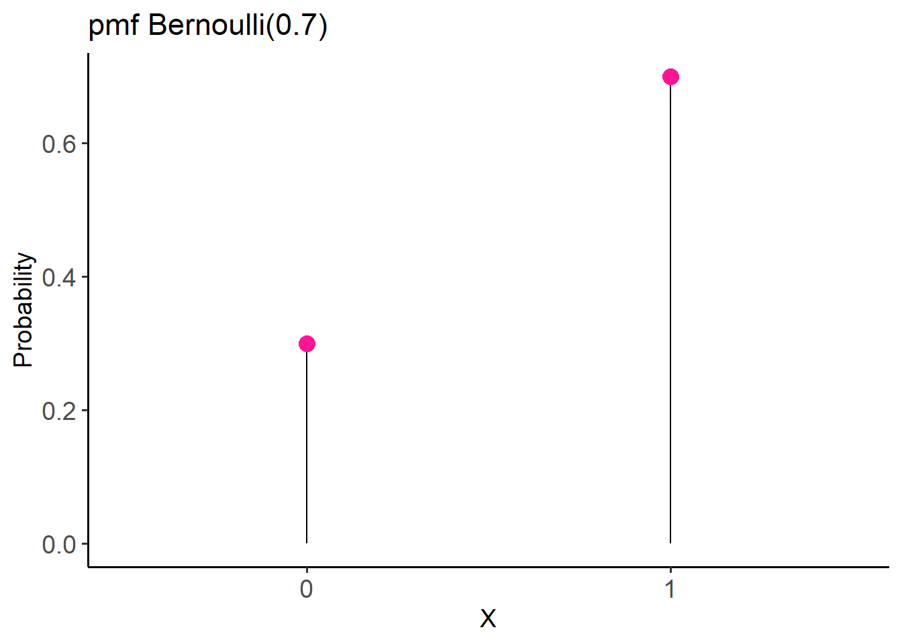
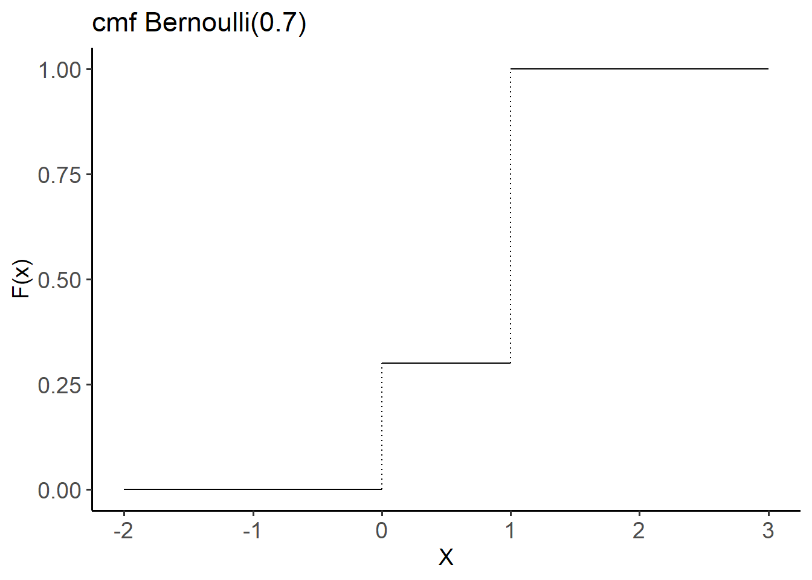

15 Probability Distributions
When we have finished this Chapter, we should be able to:
15.1 Packages we need
We need to load the following packages:
15.2 Random Variables
A random variable assigns a numerical quantity to every possible outcome of a random phenomenon and may be:
- discrete if it takes either a finite number or an infinite sequence of possible values
- continuous if it takes any value in some interval on the real numbers
For example, a random variable representing the ABO blood system (A, B, AB, or O blood type) would be discrete, while a random variable representing the height of a person in centimeters would be continuous.
Example
Suppose the X random variable for blood type is explicitly defined as follows:
\[X={\begin{cases}1, &for\ blood\ type\ A\\2, &for\ blood\ type\ B\\3, &for\ blood\ type\ AB\\4, &for\ blood\ type\ O\end{cases}}\]
That is, X is the discrete random variable that has four possible outcomes; it takes the value 1 if the person has blood type A, 2 if the person has blood type B, 3 if the person has blood type AB, and 4 if the person has blood type O.
We can also find the probability distribution that describes the probability of different possible values of random variable X. Note that the probability axioms and properties that we discussed earlier are also applied to random variables (e.g., the total probability for all possible values of a random variable equals to one).
Probability distributions are often depicted using probability tables or graphs. For example, assume that the individual probabilities for different blood types in a population are P(A) = 0.41, P(B) = 0.10, P(AB) = 0.04, and P(O) = 0.45 (Note that: P(A) + P(B) + P(AB) + P(O) = 0.41 + 0.10 + 0.04 + 0.45 = 1).
\[P(X=x)={\begin{cases}0.41,&for\ x=1\\0.10,&for\ x=2\\0.04,&for\ x=3\\0.45,&for\ x=4\end{cases}}\]
| Blood type | A | B | AB | O |
| X | 1 | 2 | 3 | 4 |
| P(X) | 0.41 | 0.10 | 0.04 | 0.45 |
Here, x denotes a specific value (i.e. 1, 2, 3, or 4) of the random variable X. Then, instead of saying P(A) = 0.41, i.e., the blood type is A with probability 0.41, we can say that P(X = 1) = 0.41, i.e., X is equal to 1 with probability of 0.41.
We can use the probability distribution to answer probability questions:
What is the probability that a randomly selected person from the population can donate blood to someone with type B blood?
We know that individuals with blood type B or O can donate to a person with blood type B. Therefore, we need to find the probability P(blood type B OR blood type O). Since the events blood type B or blood type O are mutually exclusive, we can use the addition rule for mutually exclusive events to get:
\[ \textrm{P(blood type B OR blood type O)= P(X = 2) + P(X = 4) = 0.10 + 0.45 = 0.55}\]
Hence, there is a 55% chance that a randomly selected person in our population can donate blood to someone with type B blood.
15.3 Discrete probability distributions
The probability distribution of a discrete random variable X is defined by the probability mass function (pmf). Additionally, the cumulative distribution function (cdf) gives the probability that the random variable X is less than or equal to x and is usually denoted F(x).
Bernoulli distribution
A random experiment with two possible outcomes, generally referred to as success (x = 1) and failure (x = 0), is called a Bernoulli trial.
Let X be a binary random variable of a Bernoulli trial which takes the value 1 (success) with probability p and 0 (failure) with probability 1-p. The distribution of the X variable is called Bernoulli distribution with parameter p, denoted as \(X ∼ Bernoulli(p)\), where \({0\leq p\leq 1}\).
- The probability mass function (pmf) of X is given by:
\[P(X=x)={\begin{cases}1-p,&for\ x=0\\p,&for\ x=1\end{cases}} \tag{15.1}\]
which can also be written as: \[P(X=x)=p^{x}(1-p)^{1-x}\quad {\text{for }}x\in \{0,1\} \tag{15.2}\]
- The cumulative distribution function (cdf) of X is given by:
\[F(x) = P(X \le x)={\begin{cases}0,&for\ x <0\\1-p,&for\ 0\leq x < 1\\1,&for\ x \geq 1 \end{cases}} \tag{15.3}\]
The random variable X can take either value 0 or value 1. If \(x<0\), then \(P(X \le x) = 0\) because X can not take values smaller than 0. If \(0\leq x < 1\), then \(P(X \le x) = P(X=0) = 1-p\). Finally, if \(x \geq 1\), then \(P(X \le x) = P(X = 0) + P(X = 1) = (1 - p) + p = 1\).
- The mean of random variable, X, with Bernoulli(p) distribution is:
\[μ = p \tag{15.4}\]
and the variance is:
\[ \sigma^2= p(1-p)= μ(μ-1) \tag{15.5}\]
Example
Let X be a random variable of the result of a surgical procedure, where X = 1 if the surgery was successful and X = 0 if it was unsuccessful. Suppose that the probability of success is p = 0.7. Then X has a Bernoulli distribution with parameter p = 0.7 :
\[X ∼ Bernoulli(0.7)\]
- The pmf for this distribution is:
\[P(X=x)={\begin{cases}0.3,&for\ x=0\\0.7,&for\ x=1\end{cases}}\]
We can plot the pmf for visualizing the distribution of the two outcomes (Figure 15.1).
x <- as.factor(c(0, 1))
y <- c(0.3, 0.7)
df <- data.frame(x, y)
# Plot
ggplot(df, aes(x = x, y = y)) +
geom_segment(aes(x = x, xend=x, y=0, yend = y), color = "black") +
geom_point(color="deeppink", size = 4) +
theme_classic(base_size = 14) +
labs(title = "pmf Bernoulli(0.7)",
x = "X", y = "Probability") +
theme(axis.text = element_text(size = 14))
- The cdf for this distribution is:
\[F(x) = P(X \le x)={\begin{cases}0,&for\ x <0\\0.3,&for\ 0\leq x < 1\\1,&for\ x \geq 1 \end{cases}}\]
ggplot() +
geom_segment(aes(x = -2, xend = 0, y = 0, yend = 0)) +
geom_segment(aes(x = 0, xend = 0, y = 0, yend = 0.3), linetype = "dotted") +
geom_segment(aes(x = 0, xend = 1, y = 0.3, yend = 0.3)) +
geom_segment(aes(x = 1, xend = 1, y = 0.3, yend = 1), linetype = "dotted") +
geom_segment(aes(x = 1, xend = 3, y = 1, yend = 1)) +
theme_classic(base_size = 14) +
labs(title = "cmf Bernoulli(0.7)",
x = "X", y = "F(x)") +
theme(axis.text = element_text(size = 14))
A new surgery is successful 70% of the time. If the results of 10 such surgeries are randomly sampled, what is the probability that more than 8 of them are successful?
Binomial Problem with n = 10 and p(success) = 0.7 P(9<= x <=10) = 1 - binomcdf(10,0.7,8) = 0.1493